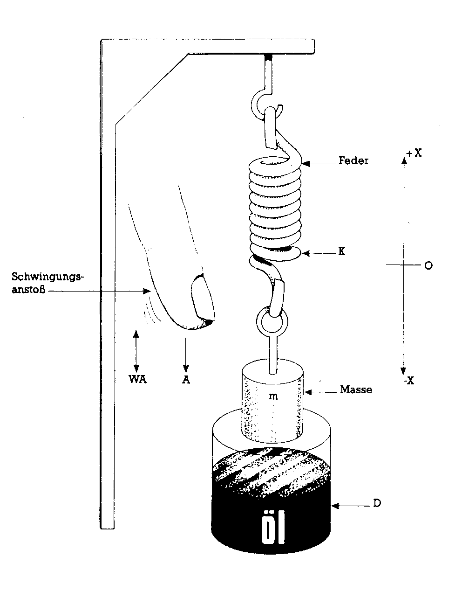
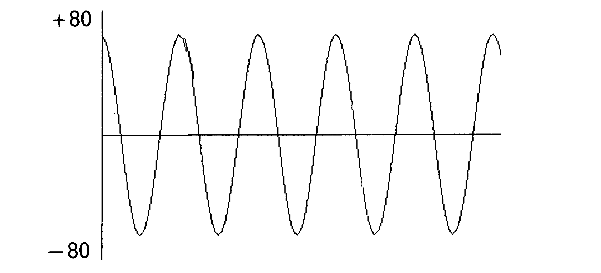
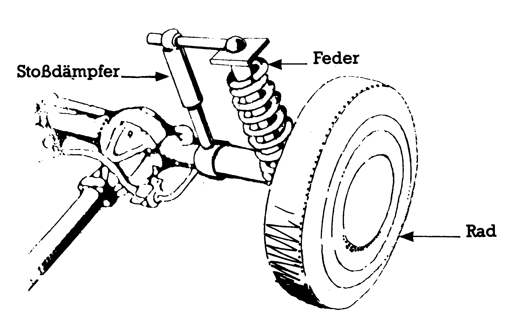
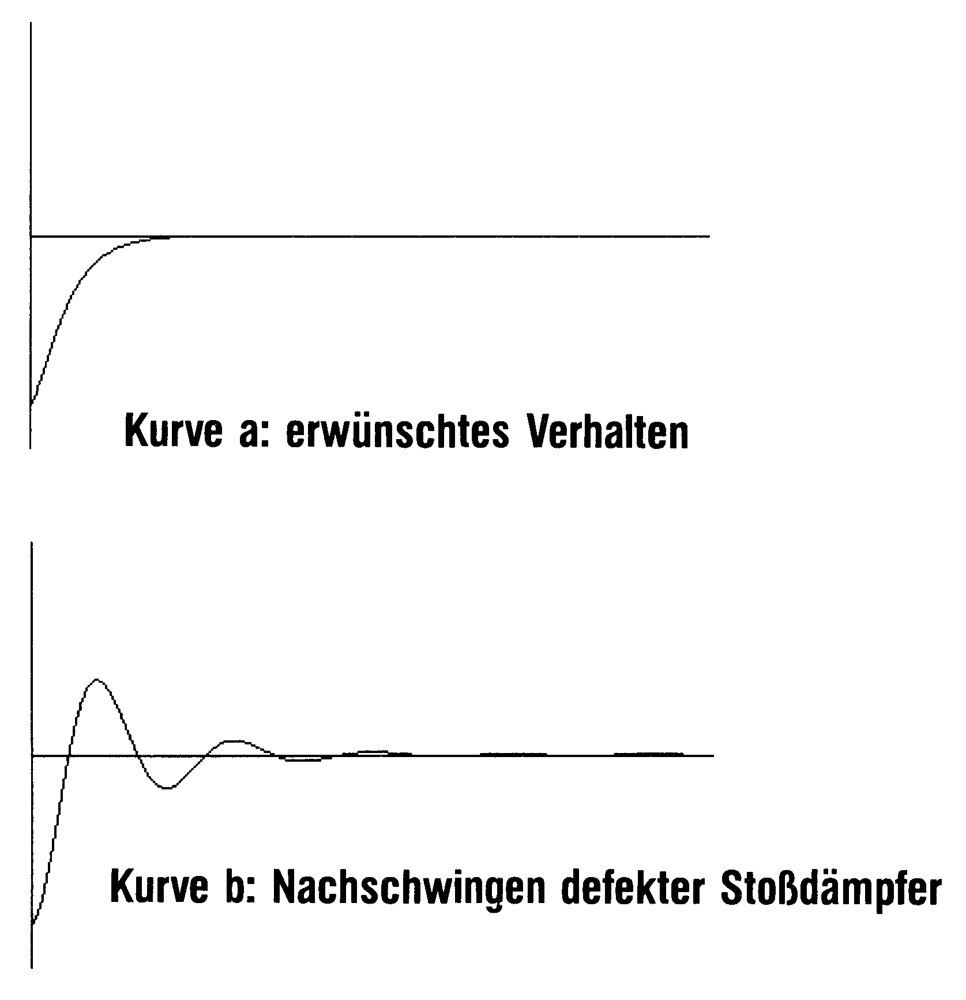
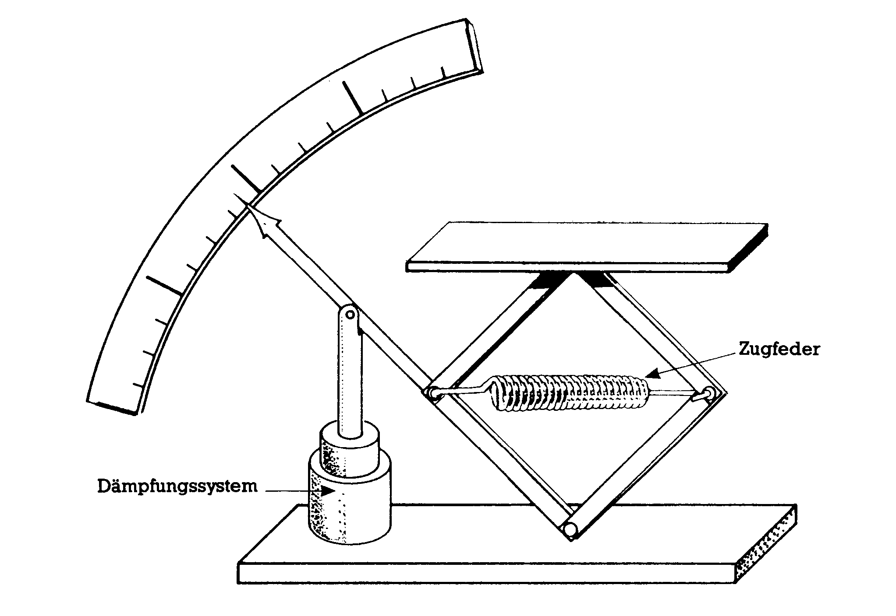
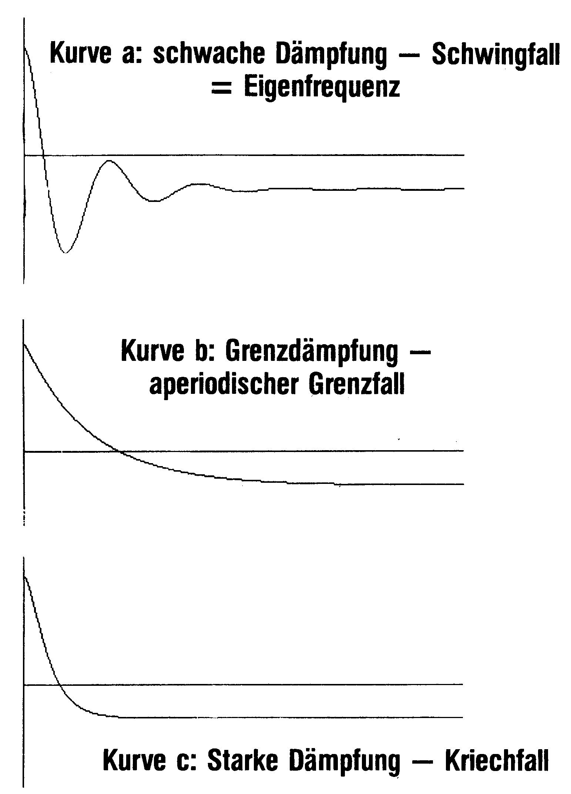
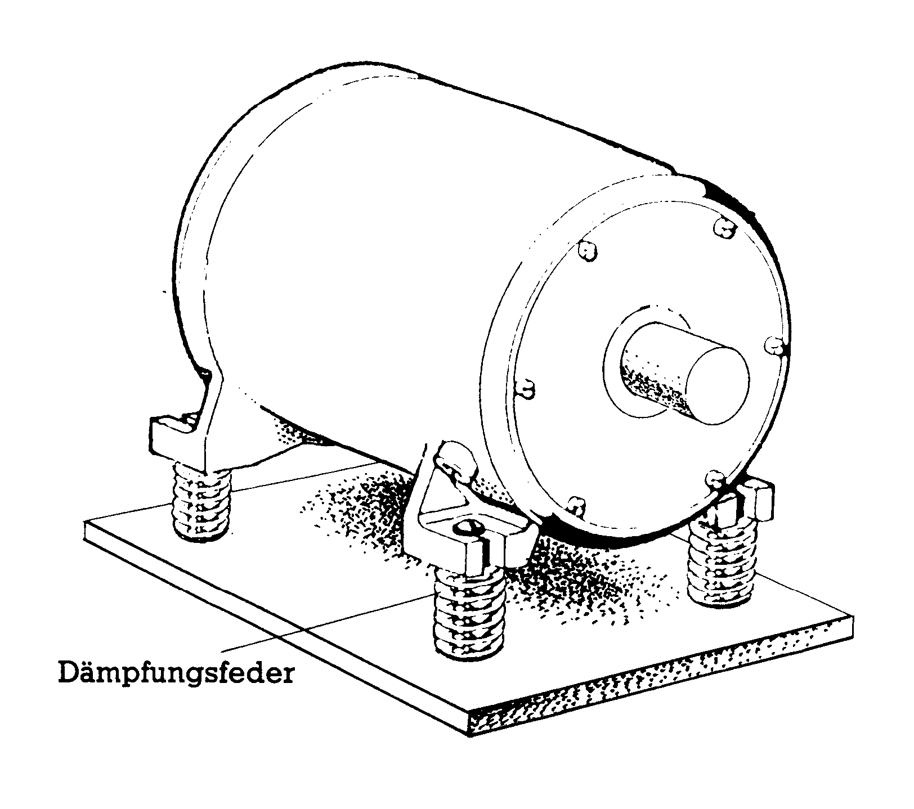
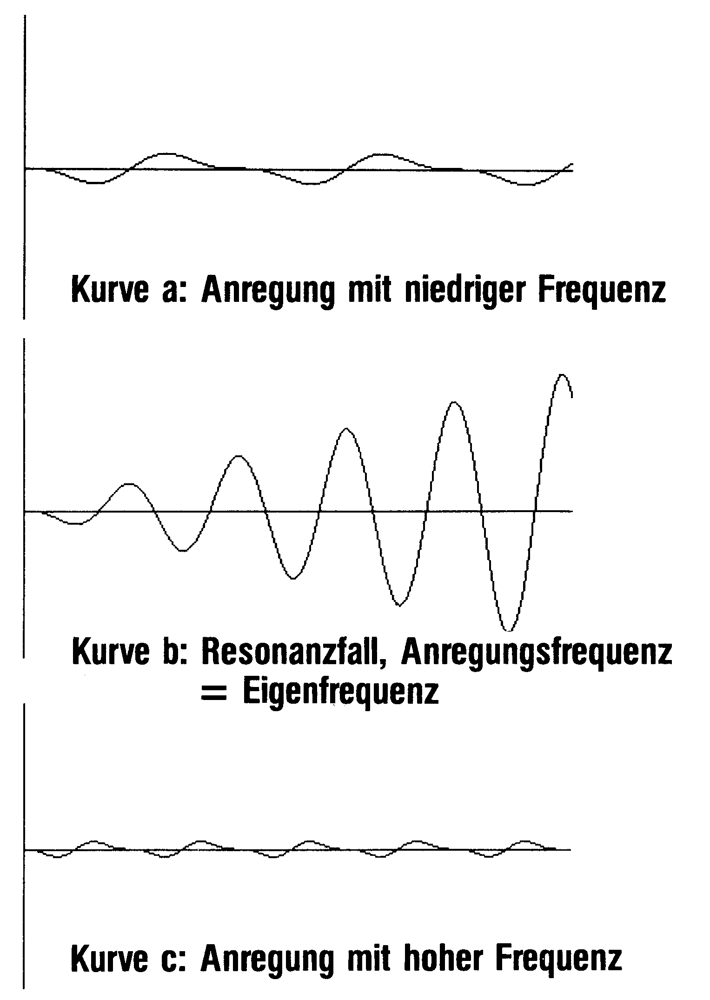

Computer-Simulation für Einsteiger
Wer den interessanten Simulations-Artikel im Januarheft gelesen hat, könnte glauben, Computer-Simulation sei nur etwas für Experten. Aber auch auf dem Commodore 64 ist dies möglich.
Die Zauberformel, die Sie dazu befähigt, steht in Zeile 200. Da auch ein gelernter Ingenieur oder Mathematiklehrer darin nicht auf Anhieb die Schwingungs-Differentialgleichung wiedererkennen kann, wird für mathematisch interessierte Leser im Texteinschub 1 die Umwandlung erklärt.
Das eigentliche Simulationsprogramm besteht aus nur fünf Zeilen (Listing 1). Alle eingerückten Programmzeilen können Sie zunächst vergessen, sie dienen nur dazu, die Lösungen auf dem Bildschirm darzustellen. Die vier Konstanten des Schwingungssystems sind in Zeile 130 zusammengefaßt. Ihre physikalische Bedeutung soll anhand der Abbildung 1 erklärt werden:

Eine Masse m schwingt auf einer Feder (Federstärke k) in X-Richtung auf und ab. Die Frequenz dieser Schwingung ist von dem Verhältnis m/k abhängig. Wir nennen es, etwas unkonventionell, EFQ (Eigenfrequenz zum Quadrat).
Durch unvermeidliche oder absichtliche Reibung wird dem System Energie entzogen. Die Konstante D ist ein Maß für diese Schwingungsdämpfung. Ferner haben wir noch vorgesehen, daß das System von außen mit einer Stärke A und einer Frequenz WA angeregt werden kann. Es führt dann erzwungene Schwingungen aus (A hat die Dimension Kraft/Masse).
Um aus der Vielfalt der möglichen Schwingungen, die ein solches System ausführen kann, eine bestimmte auszusuchen, müssen wir noch in Zeile 140 die Anfangsbedingungen vorgeben. Sie legen fest, welche Auslenkung X und welche Geschwindigkeit V das System zur Zeit t = 0 haben soll. Der Computer berechnet aus den Anfangsbedingungen X(0) und V(0), näherungsweise die Größen X(dt) und V(dt) zu einem etwas späteren Zeitpunkt dt und daraus wiederum die Werte X(2*dt) und V(2*dt) zwei Zeiteinheiten später. So hangelt sich der Rechner von einem Zeitabschnitt zum nächsten. Diese Näherungsmethode ist schon von Euler vor 200 Jahren vorgeschlagen worden, aber sie ist so rechenintensiv, daß sie erst im Computer-Zeitalter bequem ausgeführt werden kann.
Der Rest des Basic-Programms dient, wie gesagt, nur dazu, die berechneten X-Werte in Abhängigkeit von der Zeit auf dem Bildschirm darzustellen. Die Zeit kann man durch die Zahl N der Zeiteinheiten ausdrücken: t = N*dt.
dt haben wir willkürlich gleich eins gesetzt. Durch diesen Kunstgriff können wir auf der Zeitachse einfach unsere Schleifenvariable N (Zeile 190) auftragen und N von 0 bis 319 laufenlassen.
Es werden nur drei Grafikbefehle verwendet: Grafik einschalten, Punkt und Linie zeichnen. Sie können sie leicht an Ihr Grafiksystem anpassen.
Damit die X-Werte im Rahmen der 200 Bildschirmpunkte bleiben, muß der Maßstabfaktor XM passend gewählt werden. Wenn nicht anders angegeben, arbeiten wir mit XM = 1.
Zunächst müssen wir die Zuverlässigkeit unserer Zauberformel auf die Probe stellen. Schließlich handelt es sich um eine Näherungsrechnung, in der sich eventuelle Fehler über 320 Stufen summieren können. Wir simulieren zu diesem Zweck eine ungedämpfte Schwingung, von der wir wissen, daß alle Maxima gleich hoch sind und die Nulldurchgänge in gleichen Abständen auftreten müssen.
Ersetzen Sie bitte die Zeilen.
130 EFQ=.01:D=0:A=0:WA=0
140 V=0:X=80
Bild 2 zeigt, daß das Verfahren das richtige Ergebnis liefert.

Nach so viel Theorie wollen wir unsere Zauberformel nun auf ein praktisches Problem anwenden: Wie stark müssen die Stoßdämpfer eines Autos gedämpft sein, damit sie Stöße von Fahrbahnunebenheiten abfangen, aber nicht mehrmals auf- und abschwingen? (Bild 3). Das würde nämlich die Bodenhaftung und damit die Lenk- und Bremsfähigkeit verschlechtern, und außerdem den Fahrgästen auf den Magen schlagen.
130 EFQ=.01:D=(Werte siehe Text):A=0:WA=0
Für die Dämpfung D suchen Sie durch Probieren einen Wert, bei dem die Kurve die Zeitachse nicht kreuzt. Am besten versuchen Sie es mal mit Werten zwischen 0,01 und 0,5.
Vorher müssen Sie noch die Anfangsbedingungen in Zeile 140 eintragen. Wir nehmen an, daß die Feder um die Strecke -80 zusammengedrückt und zur Zeit t = 0 losgelassen wird.
140 V=0:X=-80
Ihre Kurven werden einen Verlauf wie in Bild 4 haben, und Sie können feststellen, daß für D>0,2 kein Überschwingen stattfindet.


So, nun klettern Sie mal auf die Stoßstange Ihres Autos. Schwingt der Wagen nach dem Abspringen auf und ab?
Die richtige Dämpfung spielt auch beim zweiten Simulationsbeispiel eine Rolle: Der Zeiger einer Waage oder eines Meßinstrumentes soll möglichst schnell und ohne Hinundherschwingen den richtigen Wert anzeigen. Bild 5, eine Waage. Zur Zeit t = 0 legen Sie einen Gegenstand auf die Waage und üben eine konstante Anregung A auf die Feder aus. In Zeile 200 müssen Sie das Sinusglied löschen und durch ein einfaches A ersetzen.
200 V=V-D*V-EFQ*X-A*A:X=X+V
130 EFQ=.01:D=(Werte .1, .2, .5):A=.5:WA=0
140 V=0:X=0
Das Ergebnis sehen Sie in Bild 6. Ist die Dämpfung zu klein (Kurve A), dann schwingt das System einige Zeit um die neue Ruhelage, ist sie zu groß (B), dann kriecht der Zeiger langsam dem Endausschlag entgegen. Hier kann es zu Fehlmessungen kommen, wenn man nicht lange genug wartet. Dazwischen gibt es eine optimale Dämpfung ©, bei der der Zeiger auf dem kürzesten Wege den Endwert ansteuert. Man kann die Grenzdämpfung aus der Eigenfrequenz berechnen:
D = 2*SQR(EFQ)0.2.


Beim dritten Simulationsbeispiel setzen wir einen Motor auf ein Masse-Feder-System (Bild 7), damit seine Vibrationen sich nicht auf den Fußboden übertragen. Die Vibrationsdämpfung ist um so besser, je tiefer die Eigenfrequenz des Systems unter der Betriebsfrequenz des Motors liegt. Die Eigenfrequenz muß also beim Anlassen des Motors in jedem Fall durchlaufen werden.
130 EFQ=.01:D=0:A=.5.:WA =(siehe Text)
140 V=0 und X=0.
150 XM=10:C=0
200 V=V-D*V-EFQ*X-A*SIN(WA*N) :X=X+V
Denken Sie bitte daran, in Zeile 200 das Sinusglied wiederherzustellen.
Um das Anfahren zu simulieren, geben Sie der Anregungsfrequenz nacheinander folgende Werte: WA = 0.5*SQR(EFQ), SQR(EFQ) und 2*SQR(EFQ).

Bild 8 zeigt die zugehörigen Einschwingvorgänge. Bei WA = SQR(EFQ) (Kurve B) wird das Schwingungssystem im Takt seiner Eigenfrequenz angeregt und schaukelt sich zu großen Schwingungsweiten auf. Man nennt diese Erscheinung Resonanz. Dabei können bei kleiner Dämpfung so große Kräfte auftreten, daß das System zerstört wird. Bei kleineren (Kurve A) und größeren © Frequenzen halten sich die Schwingungsweiten in Grenzen.

Was kann man tun, um eine Resonanzkatastrophe zu verhindern? Kurve B zeigt, daß die Schwingung zum Aufschaukeln eine gewisse Zeit braucht. Sorgt man dafür, daß die Motordrehzahl rasch vergrößert wird, dann kommt man auch bei mäßiger Dämpfung heil über die Resonanzstelle hinweg.
Mit den drei Simulationsbeispielen aus dem Bereich der mechanischen Schwingungen haben wir unsere Zauberformel bei weitem nicht ausgeschöpft. Wenn wir den Koeffizienten in Zeile 130 eine andere physikalische Bedeutung geben, können wir zum Beispiel das Einschwingverhalten von elektrischen Filtern nachbilden.
Sie haben sicher schon erkannt, daß sich dieses Basic-Programm vorzüglich zur Veranschaulichung und Erklärung von Schwingungsvorgängen eignet und daher sehr gut im Unterricht eingesetzt werden kann.
(Thomas Beyer/ Dr. Marie-Luise Beyer/do)